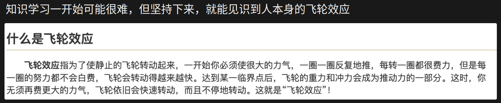
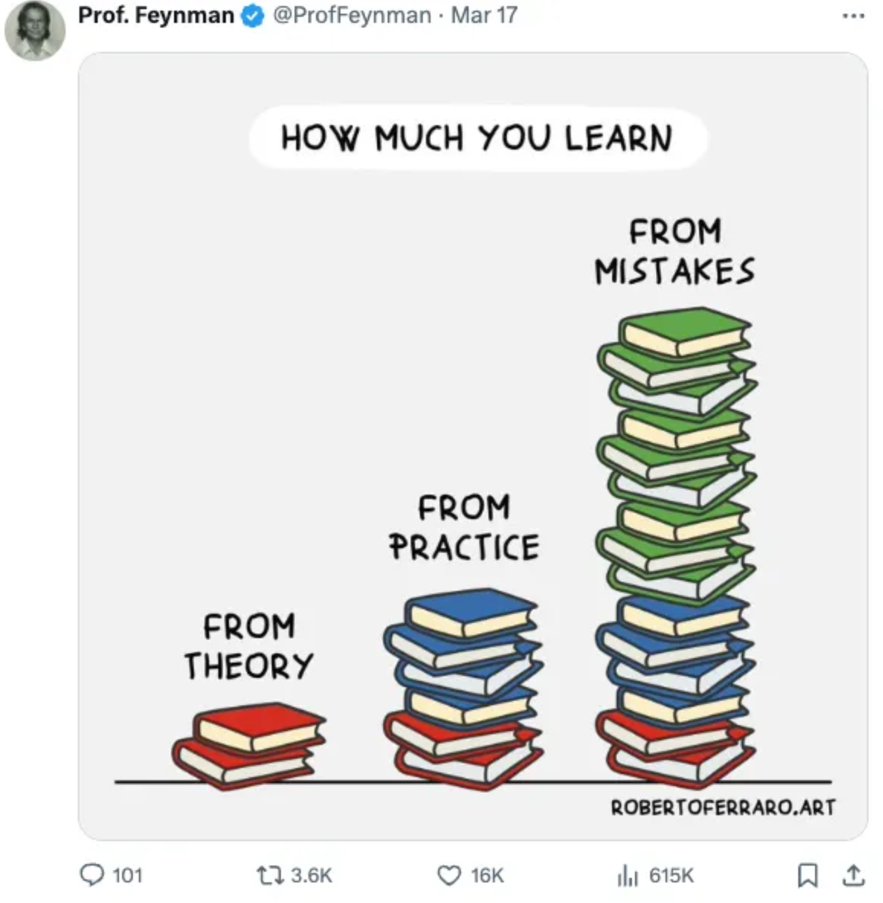

一些学习经验和反思
感谢 pengsida 大佬分享的经验.
目前也算到了本科生涯的最后阶段，偶见大佬的 Learning Research 笔记，受益匪浅. 引发了一些思考，记录如下.
长期规划
打开仓库看到的第一个文章是关于 Sebastian Starke 的经历。特点在于： - 在科研生涯的早期就明确了长期的目标，找到了真正有价值的难题，也成为了 Motivation，不断深耕此领域，每年都在这个领域不断推进。 - 不畏难，技术能力强，对于新技术不排斥，热衷探索。
而现如今，我以往所做的尝试，更倾向于一些容易解决的问题，没能找到真正有价值的问题，我想这也和我的阅历和经验有关，相关的积累还是太少。 并且如何把一件事做的有价值，我想才是真正的热情和动力。如果只是为了发论文，也许容易丧失一些动力和热情。 与此同时，文章说的另一问题，‘把时间浪费在解决“有答案”的问题’。常常被喷 Novelty，也许正是因为问题早已有答案，目前做的工作也只不过是修修补补。 仅此而已，实在难有 Novelty. 甚至有时候不得已需要为了 Design 反回去找到 Motivation. 缺乏一个更加自然的 raise quesion & solve 的过程.
思考 Idea 的能力
虽然导很强很年轻，但还是不要形成依赖导师的心理，要锻炼自己独立自主做科研的习惯和能力。
导很强但没时间。不可能每一处细节都给你铺好。导的最大帮助是在大方向上大致给你指正，给你一些启发式但较粗糙的想法，而这一路的修修补补你不能依赖他人。
认真对待每一次 Meeting，在报告前自己先整理清楚目前的进度和困难，并尝试自己想一些解决方案，Meeting 更重要的是讨论，而不是单纯的汇报进度和被动等待指导解决方案。
实验室/导师的主要作用是： 1. 帮助你找到 Novel 的课题。 2. Reviwe 论文，给出修改建议。
如何读论文
如何有效的读论文，也许可以借助论文解析树， 1. 第一个层次，基本标准：读懂论文中的所有技术细节和术语（可能需要通过读代码来辅助读懂论文） 1. 第二个层次：知道这篇论文在解决什么问题。知道这篇论文为什么要提出某某技术、为什么这样做会更好。 2. 第三个层次：清楚这篇论文在论文解析树中的位置，并思考要不要更新literature tree中milestone tasks（该科研方向需要解决的重要的问题）。思考这篇论文的limitations（在什么样的数据上会存在failure cases。可能需要通过跑实验来发现failure cases）。
按此反思，我目前读过的论文，大多停留在第一层次，甚至有些论文连技术细节都没能完全弄懂，少数重点阅读的可以达到第二层次。 我想追求量之前，还是应该先追求质。
如何高效地讨论
首先需要明确讨论的目的。 1. 让大家帮助自己project的推进。不要把“讨论”当作工作汇报（短期目标） 2. 培养有问题就讨论的习惯（长期目标）
如果“讨论”没有讨论问题，而是汇报进展，是在浪费双方的时间。要讨论，不要汇报。
我发现还真是完全命中了我目前的讨论思维。文中所说的经典反面例子正是我目前所处于的状态。
现象的具体描述：讨论的时候，一些同学可能因为害怕“讨论”时间过短而显得自己没做事情等原因，通过分享论文、分享trivial的实验现象来凑时长（可能因为遇到一些问题而导致没什么进展才想着凑时长，也可能出于其他考虑才这么做）。
这样的讨论毫无意义。浪费大家时间。消磨导的耐心，最后也难以给你提供有用的建议。
正确的做法（导的视角）： 1. 如果真的没啥问题，请直接skip讨论，简单同步一下进展和接下来的规划。 2. 如果遇到了问题，就列出要讨论的问题，把“讨论”的重心放在“自己遇到的问题”上。讨论结束地很快也没事，效率越高越好。 3. “讨论”不要分享论文、不要分享trivial的实验现象。这些不会体现自己的思考。如果想分享论文，请平时给我分享，我肯定会找时间读。什么内容可以体现自己的思考：“智慧有深度的提问”、“对project的规划”、“对technical contribution的思考”。
讨论Slides的模板 1. 一页ppt讲清楚本次讨论的概述。三句话以内讲清楚Project进展，并列出要讨论的问题。 2. 列出需要讨论的问题，和大家一起讨论解决。先抛出问题，然后带着问题去看细节，讲一些自己的思考。看细节的时候，列一些重要的实验现象在ppt里，或者给大家share自己的实验文档。 3. 列出有意思的实验现象和结论。 > - 对于科研项目的讨论，有必要每次讨论的时候review一遍technical contribution （那我们目前的Contribution就是...） > - 对于科研项目的讨论，有必要在Project前几次讨论中每次都讨论一下Project大方向的正确性（因为已经受够了project做了一两个月以后发现大方向有问题）。及时发现是否落伍，创新空间不大。
- 最后列出自己接下来的计划。→ 这能让自己把握好project的规划，也能让大家提出对规划的建议。
- 为了培养自己看论文的习惯，每次讨论也分享一篇有意思的相关方向的论文。
论文写作模板
- 画一个清楚的 pipeline figure 的草图
- 梳理论文的 story，写一个 Introduction 的写作思路，并整理要做的 comparison experiments 和 ablation studies
- 列 Method 的写作思路，然后写 Method，同时做实验
- 改 Introduction 和 Method，同时做实验
- 实验做差不多以后，列 Experiment 的写作思路，然后写 Experiment
- 美化 pipeline figure，画论文 teaser 图
- 列 Related work 的写作思路，然后写 Related work
- Review 论文。改论文的 Introduction、Method 和 Experiment
- 列 Abstract 的写作思路，然后写 Abstract
- 取论文标题
- 反复 review 论文，改论文
对比最近一次的写作。我的 pipeline figure 反而是比较晚才画出来，好在这个 pipeline 自己的理解还算清楚。 而且论文的 story 也是在不断迭代改进，大致写好了前三章后，把 Method 补上了。最后前三章 Introduction, Background, Motivation 才是最花时间最需要雕琢的部分，需要明确究竟要做什么，为什么做。
对于画图，此次也是感触颇深，最好第一次画就要把 Font Size 是否大写 比例等统一好，不然后面一直修改其实还是很费时间。
段落写作原则： 1. 一段文字只讲一个Message，并表达清楚，不要把几个Messages杂糅在一起。 2. 一段文字开头第一句就要让读者知道这段在说什么。
英语写作的基本思路：先列写作思路，然后细化每一部分的思路，再写具体的英语句子。注意段落、句子之间的flow。
- 如何判断论文段落的写作是否清楚（重要）
- 从读者的角度读论文段落。有几点可以检查的：
- 这一个段落是否有一个明确的主题？
- 段落的第一句话是否讲清楚了这一段要说什么。
- 句子中的每一个名词（概念），读者是否能读懂。是否能实现self-contained。
- 什么情况下，读者会读不懂句子中的名词
- 两个句子之间的逻辑，是否连续。
- 什么情况下，两个句子的逻辑是不连续的
- Reverse-outlining。根据已经写出的段落列出该段落的写作思路，看看思路是否通顺。
如何使用copilot和gpt辅助英语写作
该技巧核心：先列清楚写作思路，理清楚要表达的内容，再用AI辅助英语写作。写作思路要细化到知道每一句话写什么内容。
这个目前也是深有体验。如果只写一句话表达这一段想要什么，直接让AI写，最后不断修改所消耗的时间反而更多。 应该先让AI/自己整理出写作思路，细分到每一个粒度（章节/段落/句子）分别要表达什么，AI只是帮忙润色修改。
保证论文质量的非常重要的方式：追求完美主义。 1. Adversarial writing：自己review自己的论文，考虑reviewer可能会问的所有问题，并一一解决。 怎么审论文
2. 请自己的导师给自己的论文提修改意见，越多越好（相当于reviewer提前review论文了。导师给出的修改意见越多，自己如果fix了，那么reviewer能提出的问题就越少）。
如何找到实验不work的原因
- 不分析实验结果的后果：Project做得很慢，很可能不成功，或者被scoop，导致之前投入的时间白费
how to work
杨植麟：其次，我觉得最为重要的一点是，要快速迭代。我们做科研，其实并不是每个想法都正确，我们的 Idea 总会出错，而且大多数人的大多数 Idea 都是不 Work 的。我之前有个规律，就是把我的所有结果都写到Google Spreadsheet 里面，然后就发现每当写四五百行或者1000行，就会有一个 Positive 的结果。所以这就意味着，产出结果的速度，取决于你迭代的速度，你要迭代的足够快，才有可能快速地出结果。所以我觉得这是一个很重要的经验。
关于这一点，我也深有体会。之前实验不work的时候，发现在部分数据集上不错，部分数据集上很差。但是却没有深入去分析其中的原因究竟是为什么，而是采取一些逃避的方式，例如只是专注这个数据集。我想这可能错失了很多分析得到 Insight 的机会。
怎么做实验记录
一个实验记录一般这么组织 (文字上不用很详细，自己看得懂就行。实验记录一般是给自己看的)：
- 实验的目的：描述为什么做这个实验，想通过实验获得什么。
- 实验的setting：什么样的数据上做的实验，算法上有什么改动。
- 记录实验结果：记录效果好和效果不好的实验结果，包括可视化结果和量化结果。
- 分析实验结果：观察实验结果是否符合预期。如果不符合预期，需要分析实验不work的原因。
- Next step：你是project的leader，不断地思考如何进行下一步，列出接下来要做的实验，而不是等待instructions。
Ph.D. Student 应该有的能力
Q & A
下面的这些Q & A，问在我的身上，完全命中我的现状。
- Project的意义 Q: “你做的这个方向，已经很多年没有新进展了，主要原因是行业早已不关心你在解决的这个问题了，最优秀的人都去做别的了，所以已经没有太多做出影响力的机会了，这一点你知道吧？” A: “我尽量不去想这个问题。我只想把 paper 发出来。” Q: “一个没有人关心的 paper 也需要被发出来吗？”
我们做科研应该多花时间找正确的问题。
- 关于冒险 Q：“你刚才聊到的这个 idea 很有意思，有可能能够有很大 impact，你为什么不去做？” A：“我再纠结纠结，等我想得更清楚了就开始干。而且我手上别的方向还有一些低垂的果实可以摘一下，还能再水两篇 SIGGRAPH。”
做科研要Aim high，并且敢于行动。
- 变化 Q：“你有没有考虑过换个问题？” A：“我怕换了问题以后，因为不熟悉，我短时间发不出 paper 了...” Q：“但是从长久来看，做一个影响力更大的工作可能是对你帮助更大的？即使放弃掉之前很熟练的问题？何况你之前的知识也不是完全用不上，只是对问题进行了延伸。”
做科研要敢于拥抱变化。
- 本质上解决问题 Q: “你这个不就是把 A 工作的 x 和 B 工作的 y 给组合起来了吗？而且整个系统还更复杂了，也没有给结果带来本质优化。 你觉得一个理想的 paper 应该是什么样的？你怎么做到那样？” A: “好问题，我从来没思考过...”
做科研要遵循第一性原理解决问题。打补丁短期能解决某些问题，长期一定会被淘汰。
- 关于合作 Q: “你这个领域谁的研究做的最好？你和他聊过不？他为什么能做得那么好？你是不是也可以？” A: “我比较害羞、怕打扰别人，也怕被别人打扰。我只想专注于我自己的世界里。”
要敢于与更厉害的人合作。
- 独立思考 Q: “你的教授像你一样每天在研究这个问题吗？他说的就是对的吗？我在 MIT 的时候，很多教授表示，我最好的学生从来不听我的话，但是他们会拿出更好的解决问题的方法。” Q: “这些都是别人说的，你自己的看法呢？”
做科研要独立思考，总结出自己的一套。
科研学习与课程学习的不同之处
课程学习可能会让人养成一个习惯：把一门课学完了，再来用课程知识做作业。科研学习是边学算法、边用算法，在使用算法中学习算法。要善用ChatGPT。（类比课程学习就是，没学课程知识前，直接上手写作业，然后查着课程内容来做作业。GPT是一个超级检索器。）
课程学习中，因为课程要求我们不能抄答案、尽量一个人完成作业，可能会养成自己一个人把一个问题/算法琢磨清楚的习惯。而科研学习中，要善用各种资源来帮助自己高效学习，从各种地方蒸馏知识.
科研的最大敌人是你自己
课程学习需要相互竞争：
课程打分有个很烦的一点，就是正态分布，每个班只有前百分之几的人可以拿到90以上。
这样的设置，导致高分资源是有限的。班内的同学需要内卷，不断提升自身水平，超过其他人，才能拿到高分资源。
科研学习不需要相互竞争：
科研是自己做自己的论文，是在创造新的价值，而不是争取某些有限的资源。
Research Project是自己去构思、去探索的。而不是已经预先设定好、价高者得的东西。
请不要把内卷意识、竞争意识带到实验室。科研倡导相互合作、相互交流。
- 课程学习中，知识体系一般非常完善，有很好的教材、教程，要需要学习的知识点都整理好了，一步一步学习就行。
科研学习中，因为学的东西比较前沿，所学知识点都很散。即使网上有教程，也很可能梳理地不好，无法直接呈现自己所需的知识。如果通过上课、看书学习前沿科研涉及的知识点，往往需要学习大量额外的不相关内容。
科研学习中，实验室的导师、学长学姐就是行走的完整知识体系。高绩点的本科大佬们，平时怎么查询教材教程，就把导师、学长学姐当作教材教程，进行询问、学习吧！
- 科研与课程学习的区别很大。
- 课程学习：课程问题总可以有一个答案，而老师已知答案，他可以把课程变得结构化，帮助我们一步一步去获得答案。
- 科研：在这个问题上，我们自己很可能是懂得最多、思考得最深入的人，超过自己的导师。导师不知道正确解法，只能和你一起探索。
这个事实意味着自己要独立解决问题。
- 做实验时的心理准备
和课程学习不同，课程学习中做作业往往只会出错几次，而科研实验很可能失败几十次以上。大多的科研成果是通过大量失败的实验迭代得到的。
如果实验失败，不能像课程学习一样简单地说该解法不work，然后直接换个解法。科研要求分析当前实验不work的原因。
要变得敢于失败，并从失败的实验结果中分析不work的原因，从而改进当前的解法。
- 想解决方案时和课程学习的不同 科研中，在想解法时，需要先去摸巨人的肩膀。看看存不存在已有的算法能解决这个问题，再看有没有相近的算法能解决这个问题。
research，先search，再re-search。搜索相近算法的能力非常重要。 杨植麟认为：技术的本质就是对方法做组合，把小的技术组合成大的技术，把老的技术组合成新的技术。
科研上忌讳的事情
- 不注意身体健康和锻炼
- 没有深耕的领域，到处跟风跑
- 容易上头，收尾时发现致命漏洞一切白费
- 单打独斗不善合作，局限惯性思维
如何高效地从导师、学长、学姐蒸馏知识
乐于提问。培养不懂就“知识蒸馏”的思维，从各种各样的知识源进行知识蒸馏，包括大语言模型kimi、互联网、论文、导师、高年级同学。要敢于提问，克服中国学生式的恐惧。不要无来由地畏惧导师或高年级同学。有礼有节地和导师、高年级同学相处，是最好的。
精炼关键问题。学习如何梳理并总结自己当前遇到的问题。这和表达能力类似。
最后的鼓舞
 